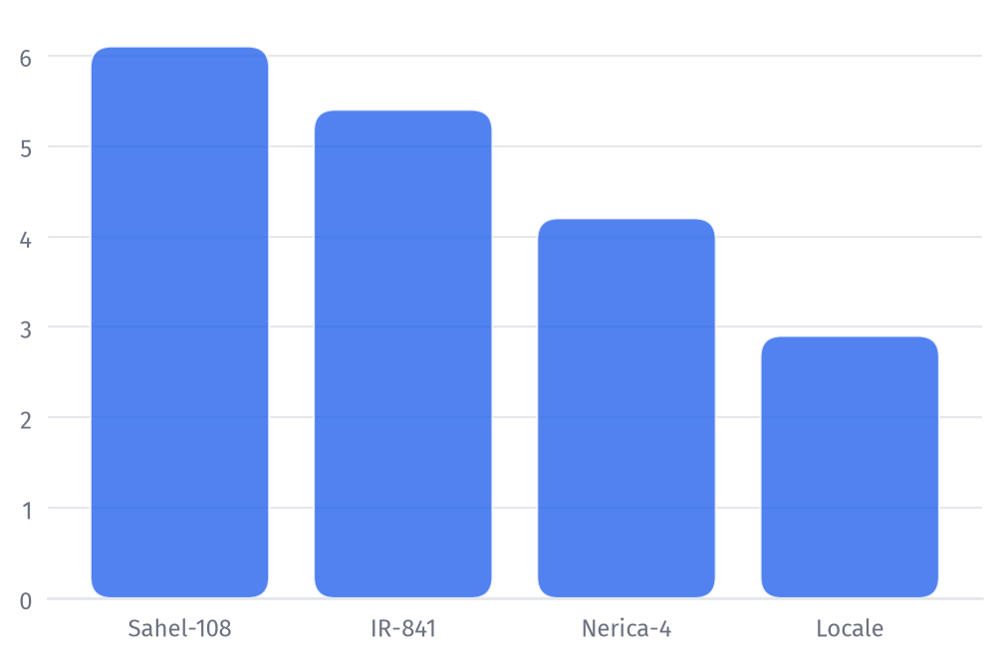

rendements = pd.DataFrame({'variete': ['Sahel-108', 'IR-841', 'Nerica-4', 'Locale'],
'rendement': [6.1, 5.4, 4.2, 2.9]})
Chart(rendements).bar('variete', 'rendement').show()
Polices, fond, couleurs, titres, annotations : d’un graphique à une infographie, en quelques appels.
Une infographie, c’est un graphique plus une mise en forme éditoriale : une police choisie, un titre qui dit ce qu’il faut retenir, un fond, des couleurs qui portent le message, des annotations et la source. Chaque élément est une méthode chaînable.
| Élément | Méthode |
|---|---|
| Police | .font('Roboto') : toute police Google Fonts, téléchargée une fois puis mise en cache ; s’applique à tous les textes du graphique |
| Police d’un seul texte | fontproperties=load_font('Inter', 'bold') dans title, subtitle, caption… |
| Titre | .title(texte, fontsize=…, fontweight=…, loc='left') |
| Sous-titre | .subtitle(texte, color=…) : sous le titre, aligné comme lui |
| Source, crédits | .caption(texte, loc='right') : sous le graphique et sa légende |
| Fond | .background('#f6eee3') : figure et zone de tracé, conservé par save() |
| Couleurs | .set_colors([...]) (séries), color=[...] (une couleur par barre), colors={groupe: couleur} selon le graphique |
| Dégradé selon la valeur | cmap=[couleur basse, …, couleur haute] (stem, choropleth, heatmap…) |
| Annotation fléchée | .annotation(texte, xy=point, xytext=texte) : flèche courbe (drawarrow) |
| Légende | .set_legend(location='below'), ou direct_labels=True (waffle) |
| Thème complet | set_theme('…') ou with theme_context('…'): (Thèmes) |
Le même graphique en barres, avant et après la mise en forme :
rendements = pd.DataFrame({'variete': ['Sahel-108', 'IR-841', 'Nerica-4', 'Locale'],
'rendement': [6.1, 5.4, 4.2, 2.9]})
Chart(rendements).bar('variete', 'rendement').show()
(Chart(rendements, figsize=(8, 5))
.font('Outfit') # 1. police (Google Fonts)
.background('#f6eee3') # 2. fond
.bar('variete', 'rendement', # 3. couleurs : la locale à part
color=['#2a6f4e', '#2a6f4e', '#2a6f4e', '#c9b79c'])
.title('Les variétés améliorées doublent le rendement', # 4. un titre qui conclut
fontsize=18, fontweight='bold')
.subtitle('Rendement moyen du riz paddy (t/ha), essai 2024', # 5. le détail
color='#7a6a55')
.labels('', '')
.annotation('+110 % par rapport\nà la variété locale', # 6. le message, fléché
xy=(0.2, 6.1), xytext=(1.6, 6.4), radius=-0.3)
.caption('Données fictives · Graphique : plutovizu') # 7. la source
.tight_layout()
.show())
Où mettre quoi. Le titre dit ce qu’il faut retenir, le sous-titre ce qui est mesuré (variable, unité, période), la source va en bas. Une couleur forte pour ce qui compte, une couleur neutre pour le reste.
font() modifie la police par défaut de matplotlib (comme set_theme) : elle vaut aussi pour les graphiques suivants. fontweight accepte un nombre (300 = léger, 700 = gras) quand la police propose plusieurs graisses.
Quatre infographies de la Python Graph Gallery, refaites avec plutovizu : les mêmes données, une chaîne d’appels au lieu de dizaines de lignes matplotlib.
D’après Waffle chart with groups evolution (Joseph Barbier, données TidyTuesday). Un carré = 5 animaux adoptés.
# Adoptions par année et par espèce (agrégées depuis le fichier TidyTuesday 2025-03-04)
adoptions = pd.DataFrame({
'annee': range(2017, 2025),
'Chat': [222, 238, 391, 320, 207, 675, 616, 779],
'Chien': [205, 191, 234, 158, 145, 422, 575, 632],
'Lapin': [13, 22, 25, 9, 3, 22, 20, 36],
"Cochon d'Inde": [3, 3, 3, 2, 2, 23, 14, 8],
'Oiseau': [1, 4, 0, 7, 4, 6, 5, 6],
'Reptile': [0, 5, 1, 2, 2, 1, 2, 1],
'Autre': [4, 1, 3, 8, 2, 6, 0, 1],
}).melt('annee', var_name='animal', value_name='n')
(Chart(adoptions, figsize=(10, 6.5))
.font('Roboto')
.set_colors(['#ff5a5f', '#ff7ef0', '#6fe8dc', '#850e3c', '#1a6e91', '#c7b2de', '#0b0b2a'])
.waffle('animal', 'n', x='annee', unit=5, direct_labels=True)
.title('Animaux adoptés au refuge de Long Beach', fontsize=22, fontweight=300)
.subtitle('Chiens et chats : 96 % des adoptions sur la période', color='#999999')
.caption('TidyTuesday 2025-03-04 · Long Beach Animal Shelter')
.tight_layout()
.show())
D’après Choropleth map with histogram (Joseph Barbier). L’histogramme des salaires, coloré comme la carte, sert de légende. Nécessite pip install plutovizu[map].
import geopandas as gpd
URL = 'https://raw.githubusercontent.com/holtzy/The-Python-Graph-Gallery/refs/heads/master/static/data/'
etats = (gpd.read_file(URL + 'us.geojson')
.merge(pd.read_csv(URL + 'usa-salary.csv'), on='state')
.query("state not in ['Alaska', 'Hawaii', 'District of Columbia']")
.to_crs('ESRI:102003')) # projection Albers des États-Unis
# Nom et salaire écrits sur les grands États seulement
etats['etiquette'] = (etats['state'].str.upper() + '\n$' + etats['salary'].round().astype(int)
.astype(str) + 'k').where(etats.area > 1.2e11, '')
(Chart(etats, figsize=(10, 7))
.font('Ubuntu')
.choropleth('salary', labels='etiquette', cmap='inferno_r', histogram=True)
.title('Salaire moyen aux États-Unis en 2025', fontsize=22, loc='center')
.caption('Données : Forbes et U.S. Census Bureau', fontstyle='italic')
.tight_layout()
.show())
D’après Lollipop with colormap and arrow (Joseph Barbier, données NASA). La couleur suit la valeur ; les lignes de repère prennent la couleur de leur niveau.
temperature = pd.read_csv('https://raw.githubusercontent.com/holtzy/The-Python-Graph-Gallery/'
'master/static/data/temperature-variation.csv')
(Chart(temperature, figsize=(11, 6.5))
.font('Urbanist')
.stem('Year', 'Change', hlines=[-0.4, 0.4, 0.8],
cmap=['#1d2a6b', '#1f9fc4', '#2ab7b0', '#e9d3b4', '#c98b5e', '#8c1c03'])
.title('Indice mondial de température terre-océan', fontsize=28, fontweight=300)
.subtitle('Écart à la moyenne 1951-1980 de la température de surface (°C)', color='#aaaaaa')
.labels('', '')
.annotation('Vagues de chaleur en\nEurope (années 1940)', xy=(1940, 0.22), xytext=(1925, 0.5))
.annotation('Plus que des valeurs\npositives', xy=(1978, -0.05), xytext=(1995, -0.25))
.caption('Source : NASA', loc='left')
.tight_layout()
.show())
D’après Waffle chart for time series (Muhammad Azhar, données NOAA). Des colonnes étroites (columns=3) donnent l’allure d’un histogramme ; un carré = 5 cyclones.
cyclones = pd.read_csv('https://raw.githubusercontent.com/holtzy/The-Python-Graph-Gallery/'
'master/static/data/storms.csv')
(Chart(cyclones, figsize=(10, 6))
.font('Outfit')
.background('#fbf8f1')
.waffle('status', 'n', x='year', unit=5, columns=3, gap=0.06, rounding=0, totals=False,
order=['hurricane', 'tropical depression', 'tropical storm', 'tropical wave'],
colors={'hurricane': '#f08a3e', 'tropical depression': '#fdd36a',
'tropical storm': '#76bcd6', 'tropical wave': '#2f5d8a'})
.title('Atlantique : les tempêtes tropicales dominent', fontsize=18, fontweight='bold')
.subtitle('Nombre de cyclones par an et par type depuis 2010')
.set_legend(location='below')
.caption('Données : NOAA', loc='center')
.tight_layout()
.show())
save() garde le fond, la police et la résolution (400 dpi par défaut, Chart(dpi=…) ou save(…, dpi=…)) ; .svg ou .pdf donnent un fichier vectoriel à retoucher dans Inkscape ou Illustrator. Voir Taille et résolution.
chart.save('infographie.png') # 400 dpi, fond conservé
chart.save('infographie.svg') # vectoriel